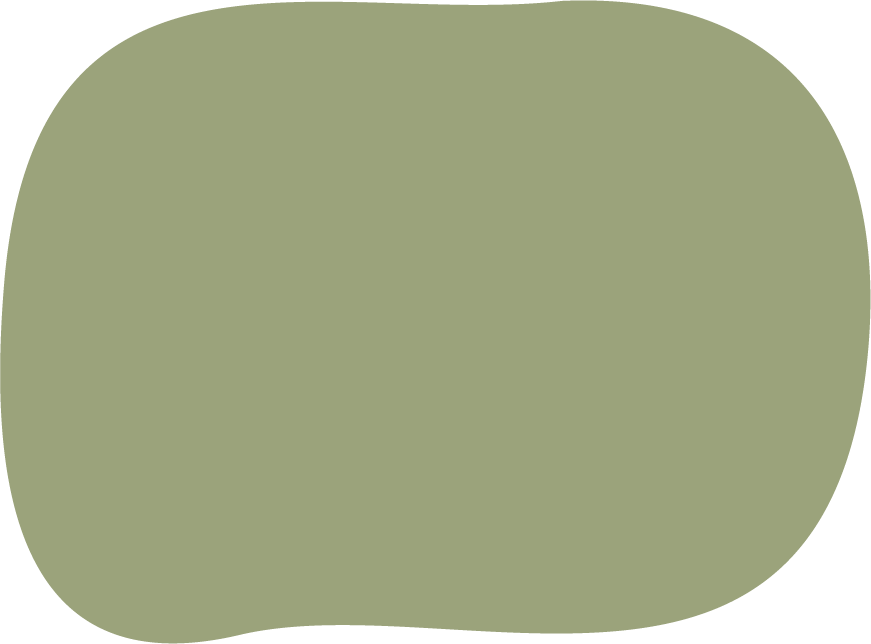

Ceci n’est pas une route. It’s a great place to be!
Who are we?
Surlepont is an action group of Anderlecht inhabitants that strives to foster Marchant bridge as an iconic, green & urban social space. The place is so unique and valuable because it combines: An iconic viewpoint that invites you to stay and experience. An urban social space that motivates you to meet and participate. A green corridor that promotes active mobility and healthy living. The future of the bridge is about to be decided. Surlepont wants to give a voice to all the residents and passers-by who value this place and support the idea of an active transport bridge.